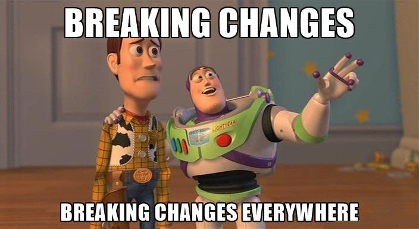

“Backward awkwardability” or how to break compatibility and stop worrying

When you are responsible for services widely used by other teams inside and partners outside, you most likely become paranoid about maintaining backward compatibility of your API as much as possible. I had no idea about what backward compatibility means in terms of software engineering until I started working on microservices. Those microservices were important for the organization’s success. And in the same time that was a highly volatile environment with rapidly growing functionality and direction changes on the fly.
Back then, I invented the term “backward awkwardability”: when you feel awkward while telling your customers that an upcoming release is not compatible with a previous so they have some work to do. They say something like: “C’mon guys, you introduced breaking changes just a few iterations before! What’s going on?” Ugh, each time I feel sick just remembering those situations.
So we are going to talk about the nature of backward compatibility and how to deal with the breaking changes in terms of API.
Breaking the broken
Backward compatibility basically means that the updates to newer versions will not break the existing functionality of the application. A newer version can contain bug fixes, improvements, or new features. But all previous features are working as expected and no efforts are required to bring them back to work after the update.
Breaking backward compatibility means you obligate your customers to make efforts so they can retain the functions they are already using. Initially, they did some work to start using your service. And now they need to do this exercise again to keep going. And probably repeat that a few times in the future.
In the short or mid-term, it is always a non-planned job to do. Opposite to new features, when customers are OK to pay some price if that will bring some value to them. But they already paid the price for the previous stuff. And they are not happy to do it again at any rate.
Taking user experience as an example, it means drastic changes in the way how users interact with the system. So they need additional efforts to learn and adapt on how to use the functionality again.
In terms of software development, that means additional work hours to change the source code in compliance with the breaking changes. And the cost of such changes is relatively high. At the very least there is a BA who assesses the impact of changes, a Dev to investigate required changes and implement them, a QA to verify the changes and do one more round of regression test. Sounds pretty demanding, isn’t it? And that largely depends on the scope of the breaking changes. And this work usually is not planned. Customers’ teams need to change their original plans which can raise the risks.
A frustrated end-user of the app with a new radical UX can stop using this app and switch to a competitor. That is not always the case when we talk about integrations. Concerned service can be a vital part of business processes and it is not possible to drop it in a moment and switch to another one. That can be a vendor lock-in or in-house service. Anyway, the cost of switching to another service is always higher than the cost of implementing the breaking changes.
Expect the unexpected
Can we avoid breaking the backward compatibility to save our customers from suffering? Well, it depends on the organization’s policies and services specifics. But the answer is not satisfying. In that case, you will pay that price instead of your customers.
Keeping compatibility at any cost leads to an increase in technical debt. Your team will have to implement sometimes non-trivial and not the best solutions to honor their commitments. They also will be very limited in usage of new frameworks and libraries and major updates of the ones in current use. And one you may find your service buried under the tech debt with no other way than drop your original obligations.
In my previous essay, I mentioned the API contract between you as a service owner and a customer. Maintaining backward compatibility is also a part of that contract. The following questions should be answered along with “signing” that contract:
Frequency of incompatible releases
You can define how frequently you are willing to release incompatible versions. That can be once per 6 months, 3 months,10 releases, or whatever. You aggregate the breaking changes in your product backlog and fire them in a particular release. Your customers can plan their migration activities accordingly.
The main issue here is to follow that schedule as there might be business reasons to introduce breaking changes earlier than originally expected.
Notification about an incompatible release
It really matters how you notify customers about it. The worst option is to send them a link to a Jira ticket with a little description and a mess in the comments. The best option - write a comprehensive migration guide.
Developers might seem such a full guide as a waste of time. But that will save their time instead of direct support.
Additional customer support during the update
A comprehensive guide will not save you from additional communications: answering questions, helping with the update, fixing bugs. So be prepared to have a support buffer in your team’s capacity. Or even better super-obvious advice: always have a support buffer.
How long you will support versions prior to the incompatible release
It is a crucial question as your customers may postpone the update to an unknown time due to various reasons. And they can keep requesting improvements and bug fixes for older versions they use.
Such backports distract the team from the focus on future releases. And sometimes it is not a trivial task that can trigger a chain of unexpected problems.
To fight this you need to include an additional point to the Contract: how long you commit to supporting previous versions.
In my practice, there was a case when we supported 5 previous releases. That was a solid argument to speed up the update. As we had a 2-weeks release cycle, the customers had about 2 months to plan and conduct the update.
That period may vary due to different business contexts. Frequent updates may not be typical for your industry. Or you have a good old customer with a fat bank account who is not willing to migrate any soon. And the senior management will eat you alive if you try to push the unwanted update.
That is mostly the organization or program-wide question. You can’t support previous releases forever but you can’t drop too frequently as well.
When the link becomes missing
Maintaining backward compatibility for existing functionality and managing breaking changes is definitely a challenge. And who is responsible for that? The answer is rather disappointing: the team in various aspects.
Business Analyst to conduct impact analysis when considering design options. Product owner to communicate with stakeholders. Tech Lead to manage a tech debt and overall delivery. Developers to follow the agreements and make all that happen. QAs to ensure we don’t break something unintentionally
To finalize that topic, I can emphasize the following keys statements:
1) When discussing a feature design or a bug fix for such a critical service, always ask yourself and the team a question if that can potentially introduce breaking changes. Become paranoid just like me.
2) Make sure all stakeholders, including the team, are aware of the breaking change policy. If you don’t have it already, you probably don’t need it. If you think you need it then start the discussion in your organization.
3) Test Automation is the key to prevent unexpected breaking changes with regression testing.
4) When designing a data structure in general and API request/response format keep in mind that there will be no chance to change those when your service goes live. It is not possible to elaborate on all questions in advance. But that approach leaves no room for “will do it later”. Try to consider all possible options even if they might be unrealistic. The price for reckless design is the highest price we pay in the industry.
5) Make sure breaking changes are properly communicated to your customers.
6) And follow your Contract commitments.